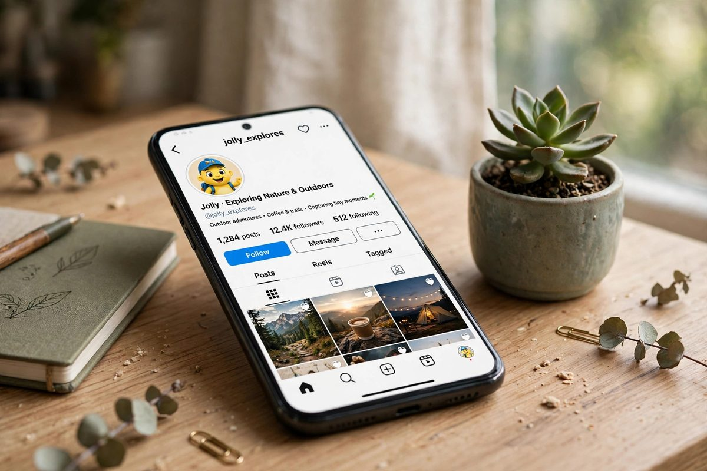

Instagram Profile Picture Viewer: See Any Public Profile Photo Full Size
View Instagram profile pictures in full size, how the profile photo system works, and the privacy limits.
Instagram shows profile pictures as small circles, which makes it hard to see any detail, and there is no built-in way to enlarge one. That is why profile-picture viewers exist: they fetch the larger version of the image that Instagram already stores. This guide explains how profile pictures work, how to view one at full size, and where the privacy boundaries lie, because a profile picture belongs to a real person even when the account is public.
How profile pictures are stored
When you upload a profile picture, Instagram stores it at several sizes and shows the small circle version in the app. The larger version is typically 320 by 320 pixels, and for some accounts it is larger still. The image is public for public accounts, which means anyone can view it, and it is also public for private accounts in the small size shown on the profile page. The full-size file is not shown in the app, but it exists on Instagram's servers.
View a public profile picture
Our profile-pic viewer tool on this site takes a username and constructs the public profile-picture link, then shows the image at its largest available size. You can also open a public profile in a browser and use the same approach. This works for public accounts. For private accounts, the larger image is not accessible, and only the small thumbnail is visible, which is a deliberate privacy protection. If the tool cannot load a picture, the account is private, the username is wrong, or the account does not exist.
Privacy and respect
A profile picture is a photo of a real person, and viewing it is not the same as having permission to use it. Do not download someone's profile picture and use it on another account, in a fake profile, or in a post. That is impersonation, and Instagram and the law both treat it seriously. If you need a larger view of a picture for a legitimate reason, such as checking whether an account is impersonating you, a viewer tool is the right way to do it, and a screenshot for a report is reasonable.
If your own picture looks blurry
Profile pictures are displayed small, so a slightly soft image is usually invisible. If yours looks blurry, upload a square image of at least 320 by 320 pixels, with the important detail in the centre, because Instagram crops the picture into a circle. Avoid text in a profile picture, because it becomes unreadable at small sizes. A clear, well-lit photo of your face works best for a personal account, and a simple logo works best for a business.
Choose a good profile picture
Your profile picture is the smallest image on Instagram and the most seen, so it has to work at a tiny size. For a personal account, use a clear, well-lit photo of your face, looking at the camera, with a plain background and no sunglasses or hats that hide your features. The important detail must be in the centre, because Instagram crops the picture into a circle and cuts off the corners. For a business, use a simple logo with strong contrast and no small text, because text becomes unreadable when the picture is shrunk. Avoid group photos, because nobody can tell which person is you, and avoid changing the picture often, because your followers recognise you by it. Upload a square image of at least 320 by 320 pixels, check how it looks on a phone as well as on a computer, and keep it consistent across your other social accounts so people recognise you everywhere.
Frequently Asked Questions
Can I see a full-size profile picture?
Yes for public profiles, using the public profile-picture URL pattern. Private accounts show only the small thumbnail.
Is viewing a profile picture legal?
Viewing a public profile picture is fine. Downloading and reusing someone's photo without permission is not.
Why is the picture small on Instagram?
Instagram displays profile pictures as small circles, but the uploaded file is larger, usually 320 by 320 pixels or more.